阅读与编辑
LemmaLoom 的阅读器是主窗口中间的窗格，显示文档的文本。你在这里阅读文档、在文本中搜索、选择词或一段文字以便编码或添加标注，也在这里修改文本本身。如果文档是以音频或视频文件导入的，阅读器会显示转写文本，上方是播放栏，让你可以一边阅读转写文本，一边收听录音。
本章的示例来自示例项目“气候辩论”（见第 1 章“简介”中的示例项目）。大多数示例使用其中的评论文章和专栏，例如“时间不多了”和“净零代价高昂”；与录音有关的示例则使用文档“电台辩论”。你可以选取文件 ▸ 导入 ▸ 示例项目，自己载入这个项目。LemmaLoom 会以界面所用的语言把它导入为一个新项目。
阅读器
在导航栏中点按一个文档，它就会在阅读器的一个标签页中打开。无论哪个文档，阅读器都由相同的几个部分组成：
- 标题栏位于文本栏上方，与窗口按钮处于同一高度。它的最左端是 LemmaLoom 的名称，最右端是阅读器的工具。
- 文本栏占据阅读器的大部分，所有文本都在这里。每行在适合阅读的宽度处换行。
- 页边栏位于文本栏左侧，为段落和句子编号，并显示你的所有标注，包括编码实例（你已编码的文字）、备忘录、书签和链接。每个标注在页边栏中都有对应的符号。
- 文档概览位于阅读器的最右侧，让你概览文档中各处内容的位置，以及它们与当前视图的相对位置。
- 状态栏位于文本栏下方，显示你在文档中的位置以及文档的总长度。
标题栏和文本之间还可能出现搜索栏、大多数已启用透镜的图例，以及音频和视频的播放器。
下图是“气候辩论”中一篇持怀疑立场的评论文章“净零代价高昂”，其中的编码实例大多属于编码“成本”。另有几段文字带有其他编码，例如“不确定性”“责任”“紧迫性”或“时间节点”。有一句话谈到一笔“要以数千亿元计”的账单，同时带有“成本”和“责任”，所以页边栏中它的旁边是一个带两个圆点的合并标注。
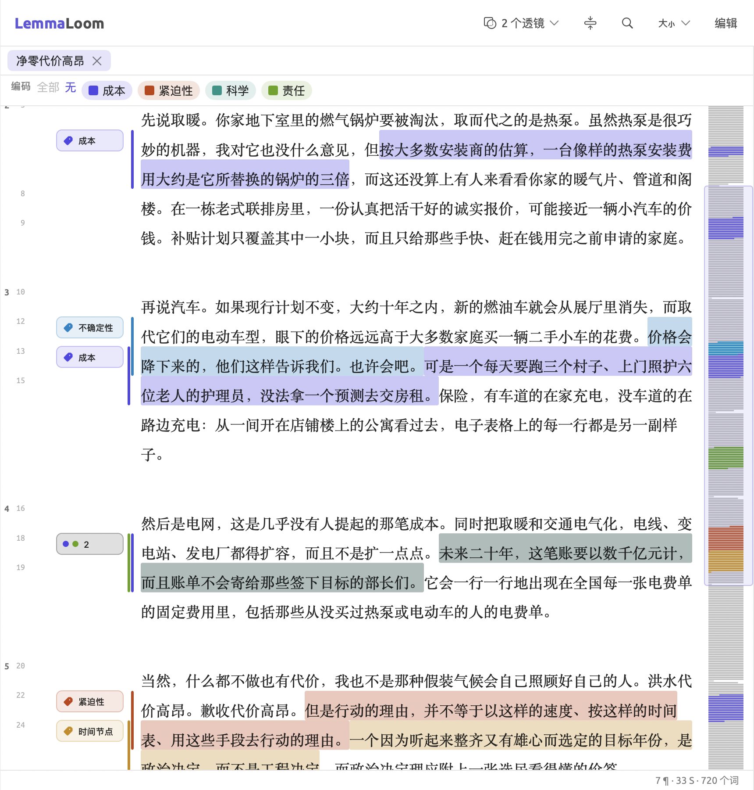
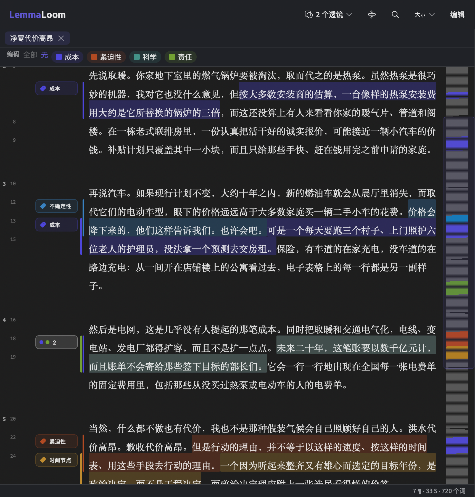
标题栏
标题栏右端的按钮作用于你正在查看的文档。两个文档并排打开时，这些按钮作用于当前窗格，也就是你最后点按的那个窗格（见本章后文的并排阅读两个文档）。这些按钮从左到右依次是：
- 透镜菜单。启用了一个透镜时，菜单上显示它的名称；同时启用了多个时，显示启用的数量；一个都没有启用时，显示透镜。新打开的文档已启用书签和编码两个透镜，所以菜单显示2 个透镜。文档建立索引之前，这个菜单不可用。
- 折叠按钮，悬停提示为仅显示透镜标注的句子。它把整个文档折叠为只剩已启用透镜所标注的句子。再点按一次，即可取消折叠。只有当某个透镜有内容可以标注时，这个按钮才会出现（见第 6 章“透镜”）。
- 在文档中查找，图标是放大镜，用来显示搜索栏。
- 字体、边栏与文字大小，图标是“大小”二字，用来打开一个关于文档外观的选项菜单。
- 编辑把阅读器切换到编辑模式。
在编辑模式下，标题栏中只有取消和存储两个按钮。
页边栏
页边栏主要分为两部分。最左边是编号，段落编号在左列，句子编号在右列。句子在整个文档中连续编号。几个句子从同一行开始时，它们的编号排在同一行，用逗号隔开，列中放得下几个就显示几个。
要选中整个段落或句子，请点按页边栏中对应的编号。两列编号同时显示时，点按左列选中段落，点按右列选中句子。选中之后，这段文字可以像其他选区一样处理，包括为它编码。事实上，点按编号是为整个段落或句子编码最快的方法（见本章后文的选择文本）。
编号和文本之间是标注区，你为文档添加的所有内容都显示在这里。启用编码透镜时，这里显示编码实例；同样，启用书签时显示书签。备忘录和链接则无论启用哪个透镜都会显示。
- 编码片段旁边有一条细竖条，颜色与各自的编码相同。编码实例相互重叠时，竖条并排显示；第三条之后的竖条共用第三个位置。将鼠标指针悬停在竖条上，文本中对应的文字会高亮显示。
- 每个编码实例、备忘录、书签和链接在起点处都有一个小标注。编码实例的标注显示编码名称，备忘录的标注显示备忘录的开头；书签的标注显示书签的评论，链接的标注则显示链接类型。
- 标注可能相互重叠时，所有重叠的标注会合并为一个灰色标注，上面有彩色圆点和数量。
点按标注或竖条，就会选中它所对应的文字。点按链接标注则不同，它会跳到链接另一端的文字，必要时还会打开另一个文档。例如在“气候辩论”项目中，评论文章“净零代价高昂”里一段文字上的链接，会直接通向这篇文章所回应的演讲“一位市长的承诺”。将鼠标指针悬停在标注上，可以看到备忘录、链接或较长书签评论的全文；链接的弹出窗口显示链接信息，还有跳转到另一端。指向或点按合并标注，会以列表形式显示其中的所有条目；点按一个条目即可选中它的文字，如果是链接，则跳到另一端。

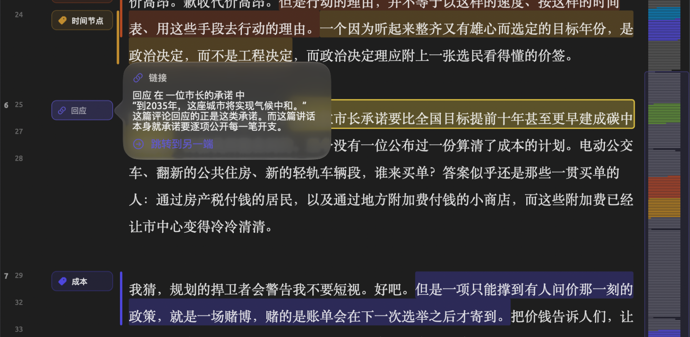
文档概览
文档概览位于阅读器右侧，是一条按已启用透镜着色的滚动条。它告诉你当前位于文档中的哪个位置，以及已启用的透镜（例如编码）标注了文档的哪些部分。文档的全部内容都容纳在文档概览面板的范围之内。文本显示为从上到下排列的浅色线条，段落之间留有空隙。全部由大写字母组成的短段落表示类似标题的文字，显示为颜色较深的笔画。编码片段和透镜着色的词以各自的颜色显示。
文档概览还显示以下内容：
- 你当前查看的位置，以一个线框矩形标出；
- 书签，显示为最左侧的小方块；
- 搜索匹配项，显示为最右侧的短刻线；
- 选中的词，显示为横贯文档概览面板的一条线。
将鼠标指针悬停在文档概览的某个位置，可以预览那里的文字，即鼠标指针下方的段落及其编号，以及它前后各四个段落。你可以点按跳到文本中的这个段落（它会短暂高亮显示），也可以在文档概览中上下拖移，在文档中移动。
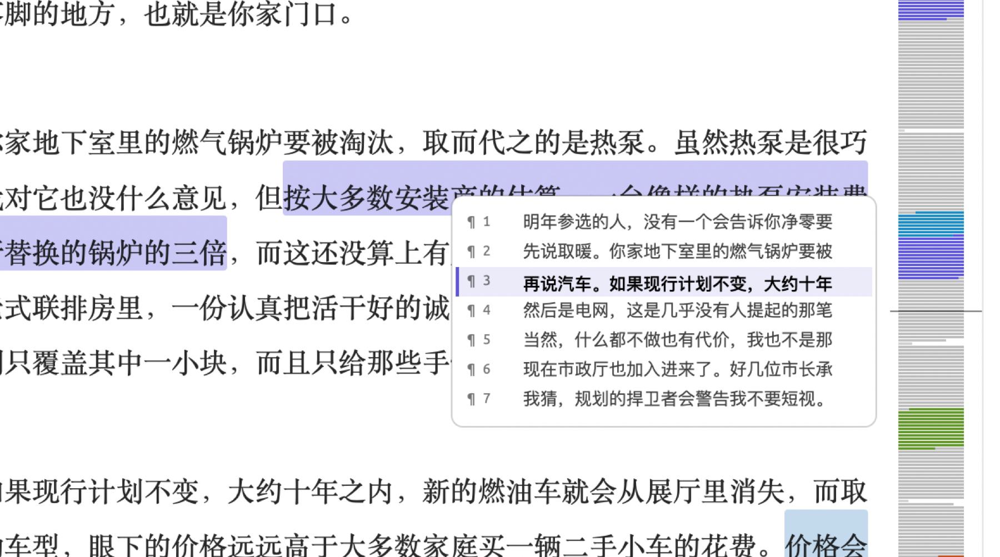
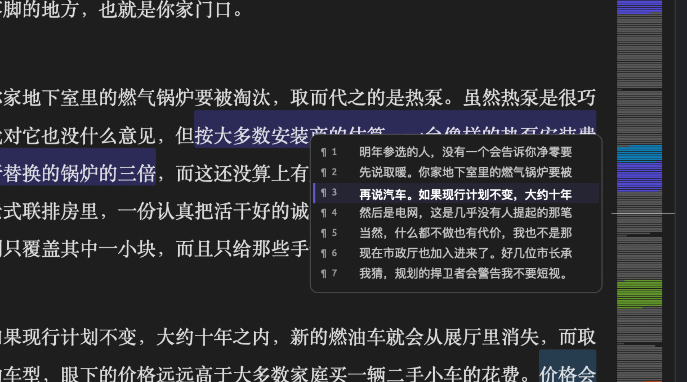
状态栏
状态栏左端显示当前所选内容的位置。选中一个词时，状态栏显示它所在的段落和句子，以及它在句中是第几个词符，例如 ¶ 4 · S 22 · T 6 表示第 4 段、第 22 句、第 6 个词符。词符是一个词或一个标点符号。选中一段文字时，状态栏显示它开始和结束处的段落和句子，以及它包含的词符总数。
索引建立完成后，右端以简洁的形式显示文档的统计信息，例如“时间不多了”显示 10 ¶ · 63 S · 1,119 个词。词数按词符计算，也就是包括标点符号；显示哪几项计数，取决于页边编号的设置。页边栏设为段落时显示段落数和词数，设为句子时显示句子数和词数，设为关闭时只显示词数。
索引建立完成之前，或者无法建立索引时，这里显示文档当前的索引状态，而不是统计信息（见第 21 章“分析与索引”中的在阅读器中）。
这些状态包括：
- 首次建立索引时，显示当前阶段的名称和百分比；
- 分析器处理文档时（专门针对某一类特征的额外处理，例如句子之间的衔接），显示运行中和正在运行的分析器名称；
- 对于不做语法分析的语言，显示不支持…的语法分析，省略号处为该语言的名称；
- 如果导入时取消勾选了为语法分析建立索引，索引处于关闭状态，显示索引已关闭和立即建立索引链接；
- 建立索引出现问题时，显示原因和重试索引链接。
索引建立完成之前
文档一打开就可以阅读。不过，在文档的索引建立完成之前，阅读器的几项功能暂时无法使用：
- 页边栏只显示段落编号，因为句子要在建立索引时才切分出来；
- 要选择文字，只能用点按并拖移的方式手动选择；
- 透镜菜单不可用；
- 状态栏显示索引进度，而不是统计信息。
建立索引需要多长时间，取决于文档的大小和电脑的配置。LemmaLoom 的语法分析支持英语、德语和中文。其他语言的文档会一直保持上述状态，但仍然可以阅读、搜索、编码和编辑。
阅读器会保留什么
每个文档都会记住你读到了哪里、启用了哪些透镜，以及检查器的状态。项目会记住打开了哪些标签页、当前是哪个标签页，以及哪个文档在分屏浏览中并排打开。退出 LemmaLoom 时，这些都会保留下来，所以阅读器会回到你上次离开的位置。
更改文本的呈现方式
你可以设置字体、文字大小、页边栏显示的内容以及文本版式。这些设置适用于所有项目中的所有文档，在你更改之前一直保留。
有三个地方可以调整这些选项：
- 标题栏中的字体、边栏与文字大小菜单，其中有字体、边栏和版式子菜单，以及增大文字、减小文字和重置文字大小选项；
- 显示菜单，只用于调整文字大小；
- LemmaLoom ▸ 设置…（⌘,）中的阅读器页面，在这里还可以设置选区的显示方式，并查看预览。
要把这些设置以及选区的显示方式恢复为首次启动 LemmaLoom 时的默认状态，请点按阅读器页面顶部的全部重置为默认。
字体
阅读器提供十一种字体，即 System Serif、System Sans、System Rounded、System Mono、Georgia、Palatino、Baskerville、Times New Roman、Helvetica Neue、Avenir Next 和 Menlo。在你更改之前，所有文本都以 System Serif 显示。无论你选择哪种字体，中文文本都使用 Mac 默认的中文字体。
要更换字体，请点按标题栏中的字体、边栏与文字大小，然后在字体下选择一种。在设置中，它位于排印部分的字体一行。
文字大小
文字大小可以在 70% 到 200% 之间以 10% 为一级调整。默认大小为 100%，即 17 磅。
- 选取显示 ▸ 增大文字（⌘+）或显示 ▸ 减小文字（⌘-），每次调整一级。
- 要恢复默认大小，请选取显示 ▸ 重置文字大小（⌘0）。
- 你也可以在设置中使用排印下的文字大小滑块。滑块旁边显示百分比，百分比旁边的重置按钮可以恢复到 100%。
文本栏的宽度会随之调整，使每行平均容纳的词数保持不变。文本编辑器（见本章后文的编辑文档文本）也使用相同的设置。
页边编号
边栏子菜单（在设置中称为页边编号）决定页边栏使用哪种编号方式：
| 设置 | 页边栏显示 |
|---|---|
| 两者 | 段落编号和句子编号（初始设置） |
| 段落 | 仅段落编号 |
| 句子 | 仅句子编号 |
| 关闭 | 不显示编号 |
如果你只用段落来指明文字的位置，选择段落可以让页边栏更清爽。不过，即使选择关闭，标注区仍然显示编码实例、备忘录、书签和链接等标注。
版式
版式子菜单（在设置中位于页面下）提供两种版式，即单栏和双页跨页。
文档默认以单栏显示，文本排成一栏，旁边是页边栏。
在双页跨页中，文本排在页面上，两页并排显示，就像一本打开的书。每页与阅读器等高，向下滚动即可从一对页面转到下一对。每页都像单栏版式一样显示段落编号和句子编号，文档概览也照常工作。调整窗口大小时，文本会重新排到新的页面上。双页跨页适合较大的屏幕，也适合在编码之前通读较长的文档。
切换版式时，你在文档中的当前位置会保持不变。
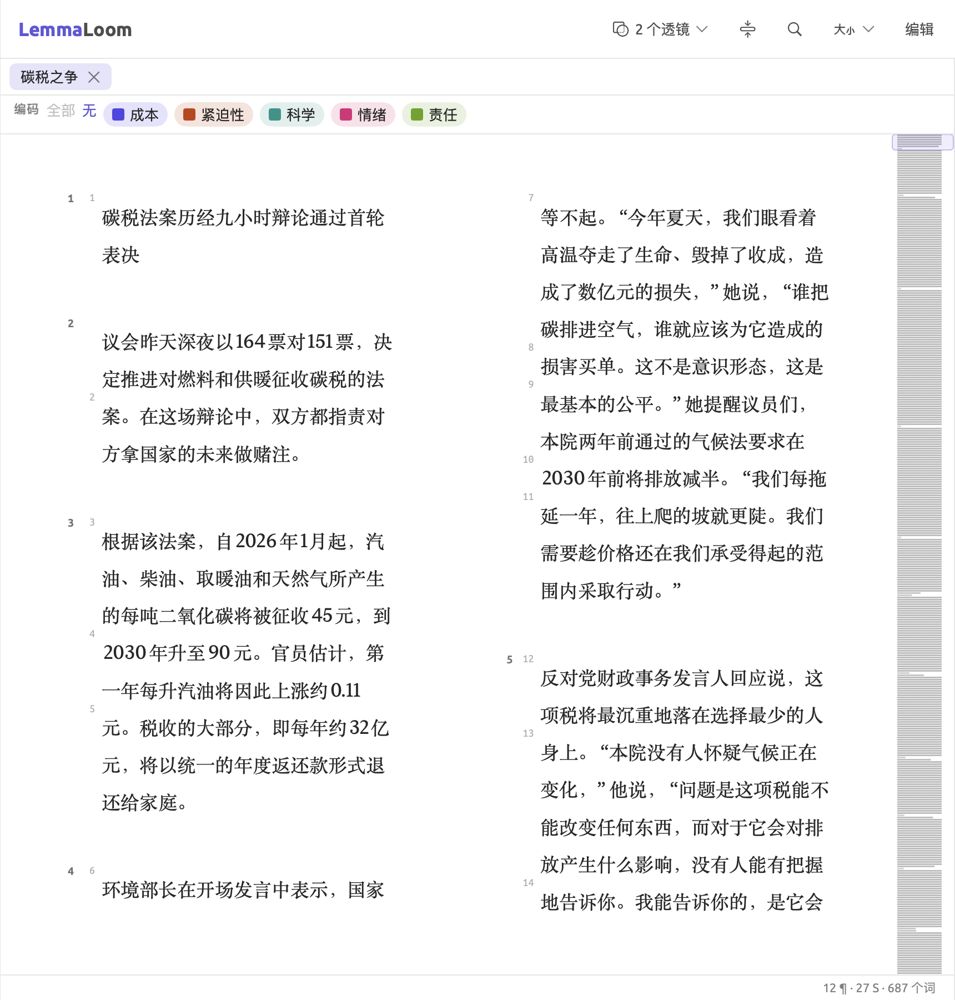
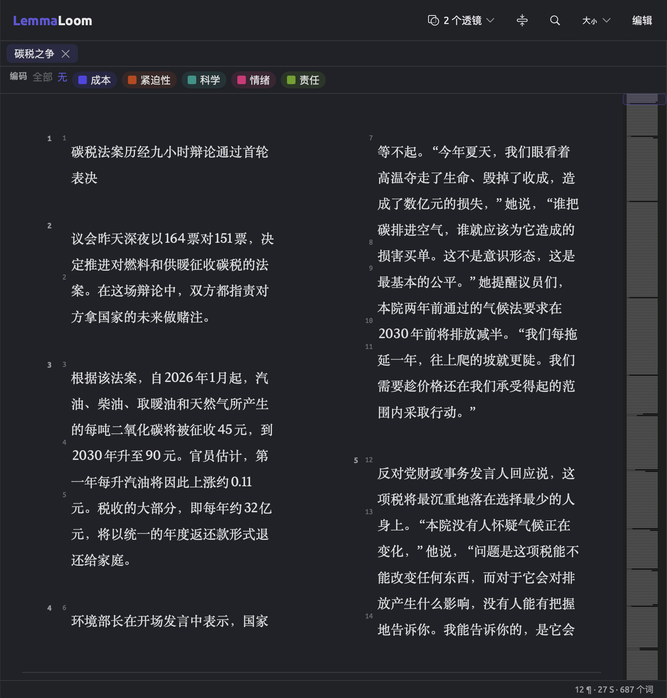
阅读器颜色
阅读器的外观，包括文字颜色和背景，取决于你为整个应用选择的主题。你可以在设置的通用页面中，用外观下的主题选择主题。关于主题的详细说明，请参阅第 24 章“设置与外观”。各个主题在阅读器中的效果如下：
| 主题 | 阅读器 |
|---|---|
| 系统、红色盲、绿色盲、蓝色盲 | 跟随 macOS 的浅色或深色外观 |
| 浅色、高对比度 | 白底深色文字 |
| 深色、高对比度深色 | 深色背景上的浅色文字 |
| 奶油色 | 暖调米白纸色上的深棕色文字 |
| Solarized 浅色 | 淡奶油色背景上的灰蓝色文字 |
| Solarized 深色 | 深蓝绿色背景上的淡灰色文字 |
选区的显示方式
选中一个词或一段文字时，选区会在文本中显示出来；选中的如果是一个词，还会显示它的语法关系。它们的外观由设置中阅读器页面的选择部分决定。页面底部有预览，你可以在更改各行时查看最终效果。
| 行 | 选项 | 控制的内容 |
|---|---|---|
| 所选文本 | 实心块、高亮 | 用文字颜色的圆角色块衬在所选的词下面，词改用背景色显示；或者在它们后面衬一层浅色。 |
| 中心词和依存词 | 弧线、连线、标签、高亮、关闭 | 阅读器如何显示所选词依存于哪个词（它的中心词），以及哪些词依存于它（它的依存词）。 |
| 周围文本 | 淡化、轻度淡化、高亮句子、关闭 | 选区周围的其余文本是否变暗，或者是否为所选词所在的句子加上底色。 |
| 音频播放 | 聚光、实心块、高亮 | 阅读器跟随录音时，正在播放的那段话如何呈现（见本章后文的跟随转写文本）。 |
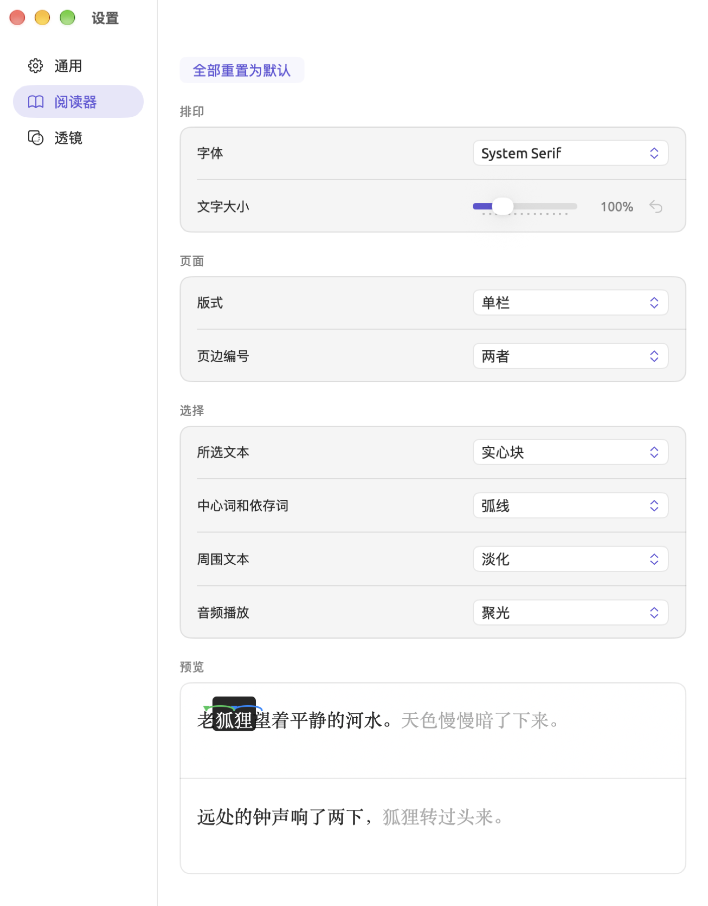
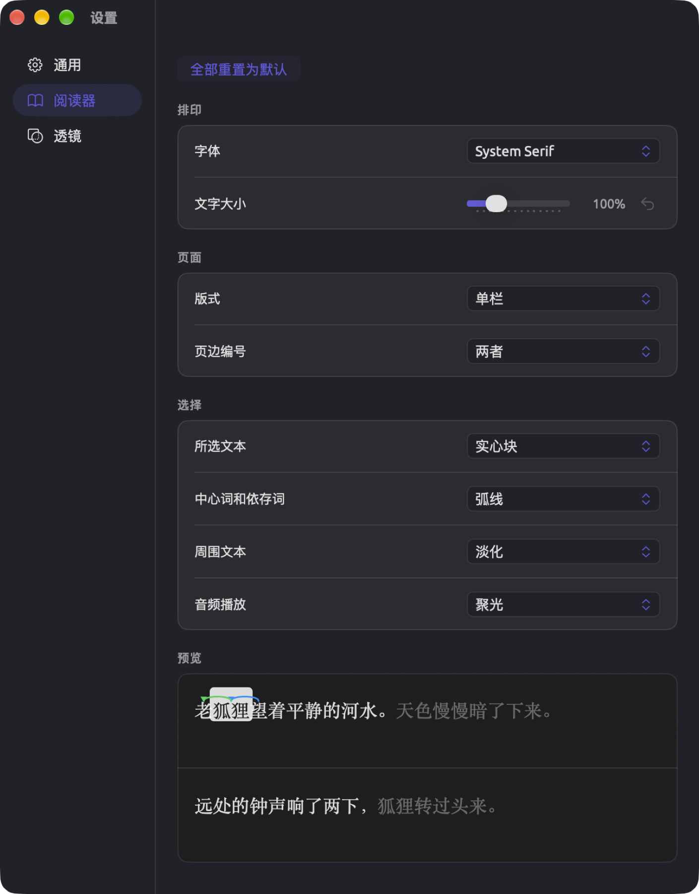
每一行的默认选项都是第一个选项。
在语言学中，一个词的中心词就是它所修饰或依存的那个词。例如，在“一项全国住宅保温计划”中，“全国”修饰、描述“计划”，所以“计划”是中心词，“全国”是它的依存词之一。
淡化能让你的注意力集中在当前句子上。如果你希望编码时上下文依然清晰可见，可以选择轻度淡化或高亮句子。
查找文本
搜索栏在当前打开的文档中搜索你输入的字符，并直接带你到匹配的文字处。如果需要匹配一个词的所有形式（例如英语的 pay 和 paid），或者同时搜索多个文档，请使用查询，而不是搜索栏。查询会考虑词形和语法上下文（见第 15 章“构建查询”）。
图中是专栏“模型总是失准”，作者是一位“也曾以建模为生”的怀疑论者。用搜索栏搜索“模型”时，LemmaLoom 找到 10 个匹配项，文档概览显示它们在文中的分布。
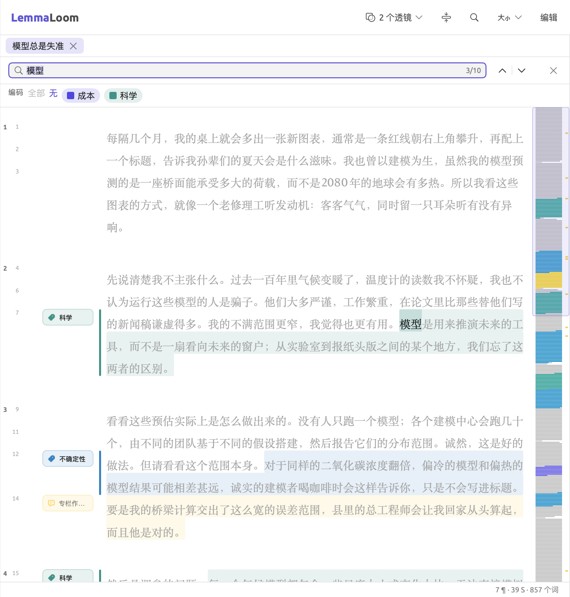
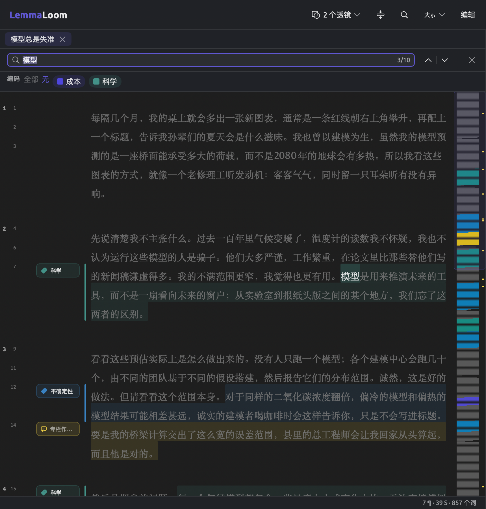
要在文档中查找文本：
- 选取编辑 ▸ 查找（⌘F），或点按标题栏中的在文档中查找（放大镜）。搜索栏在文本上方打开，光标位于它的搜索框中。
- 输入要查找的内容。LemmaLoom 会边输入边搜索，并滚动到第一个匹配项。
- 按下 Return 键或 ⌘G，或点按向下的箭头，转到下一个匹配项。按下 ⇧⌘G 或点按向上的箭头，回到上一个匹配项。过了最后一个匹配项，搜索会从第一个重新开始；在第一个匹配项上按下 ⇧⌘G，则转到最后一个。
- 要关闭搜索栏，请按下 Esc 键、点按搜索栏右端的 ×，或再次选取编辑 ▸ 查找（⌘F）。
搜索框中的计数器显示你当前所在的是第几个匹配项，以及匹配项的总数，例如 3/10 表示共 10 个匹配项中的第 3 个。没有匹配项时，显示未找到。
阅读器会自动突出显示文本中的当前匹配项。周围文本设为淡化或轻度淡化时，匹配项周围的文本会变暗；设为高亮句子或关闭时，匹配项会加上底色。所有匹配项都以短刻线的形式显示在阅读器文档概览的右边缘。
匹配规则如下：
- 忽略大小写和重音符号，所以
model能匹配 Model，cafe能匹配 café； - 忽略输入内容前后的空格；
- 匹配项可以位于较长的词内部，所以
model也能匹配 models 或 modelers。要把一个短语作为整体查找，请连同其中的空格一起输入，例如error bars； - 中文文本也按同样的方式搜索，即作为一串字符来匹配。例如，
建模也能找到“建模中心”和“建模者”中的“建模”。
在 LemmaLoom 中，每个文档都有自己的搜索栏。关闭搜索栏会重置搜索。如果阅读器已折叠为文档中被标注的句子，打开搜索栏会展开阅读器，让你搜索整个文档。再次折叠阅读器时，搜索栏会自动关闭。编辑文档时，查找不可用。
选择文本
在 LemmaLoom 的阅读器中选中文字之后，你可以为它编码、加书签、附上备忘录、建立链接，或者把它添加到词典中。选中的可以是一个词，也可以是更长的一段文字。
选择一个词
点按一个词即可选中它。再次点按这个词，或按下 Esc 键，可以取消选择。文档建立索引之后，才能选择单个词。
选中一个词，还会显示它与句中其他词的关系。默认情况下，弧线显示所选词与它的中心词和依存词之间的联系，所在句子之外的文本会变淡。如果检查器已打开，它的语法标签页会显示所选词的详细信息（见第 11 章“语法检查器”）。选区的外观以及关系的显示方式可以在设置中更改（见本章前文的选区的显示方式）。
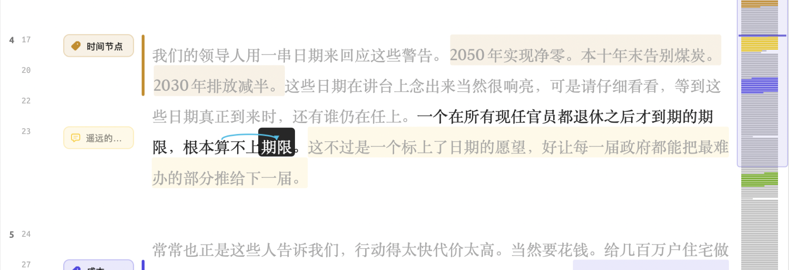
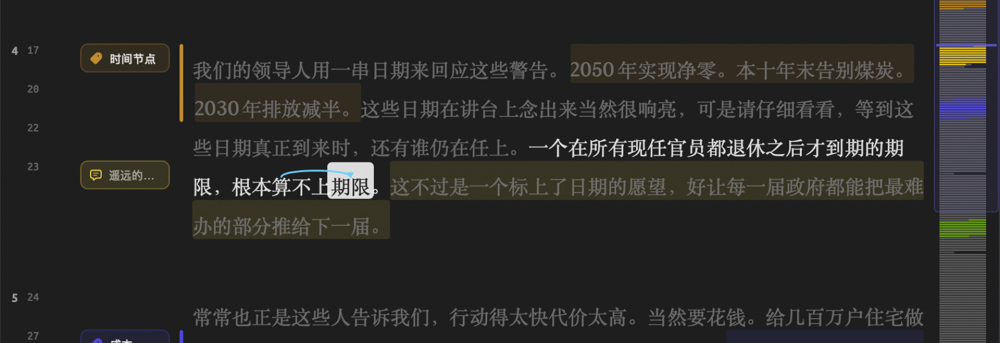
选择一段文字
在一段文字的开头点按，然后拖移到结尾，即可选中这段文字。两端的空格不计入选区。你也可以点按页边栏中段落或句子旁边的编号，直接选中它们；或者点按标注区中的标注或竖条，选中对应的文字。
选多少文字，取决于你的需要。不过，建议选取足够多的文字，让选区本身就能看懂，因为编码之后，这些文字会脱离上下文被单独阅读。在“气候辩论”中，大多数编码的选区是一两个完整的句子。
要拷贝选中的文字，请选取编辑 ▸ 拷贝（⌘C）。
选区栏
在文档中选中一个词或一段文字后，阅读器底部附近会立即出现选区栏。选区栏的开头显示所选内容的前几个词，后面是可以对它执行的操作。
图中选中了“时间不多了”中的一句话，准备像快速入门中那样为它编码“时间节点”。前面一段文字已经编码为“时间节点”。下一句旁边有一个标注，属于一条以“遥远的目标被解读为推诿”开头的备忘录。
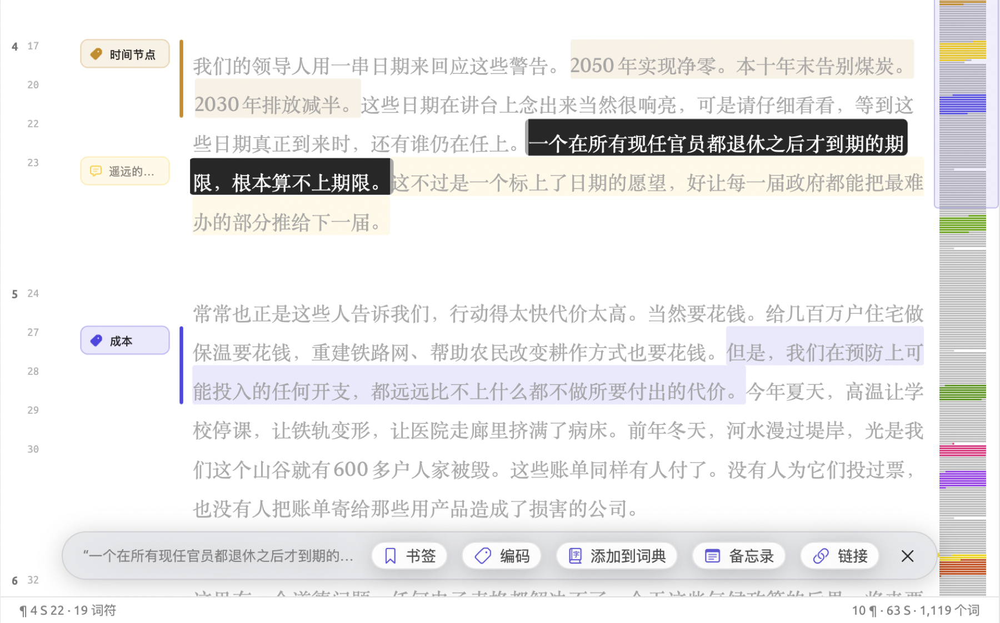
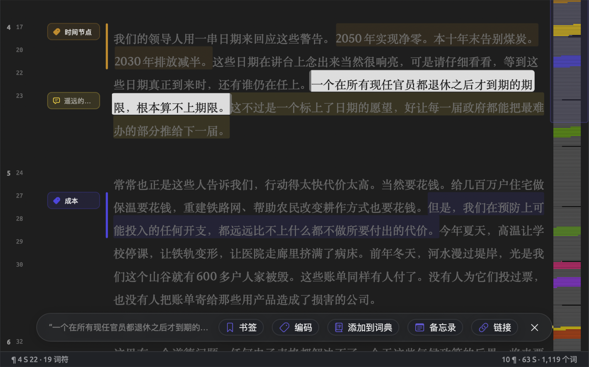
选区栏提供以下功能：
- 书签为当前这段文字加上书签，可以附带评论，例如“时间不多了”中一个书签的评论“转入结尾呼吁时的反问句”。如果选区位于一个书签上，这个按钮会变为移除书签。
- 编码打开编码面板。选择一个编码，即可为这段文字编码；在输入框中输入文字，可以在列表中查找编码，按下 Return 键会应用高亮显示的编码（在你用 ↑ 和 ↓ 移动之前，高亮显示的是第一个匹配项）；选择带勾号的编码（即这段文字已有的编码），则会将它移除。列表中所有编码的后面是添加编码“…”，如果还没有同名的编码，它会以你输入的内容为名新建一个编码。最后是实境编码“…”，用一个以所选文字命名的新编码为选区编码。
- 添加到词典把所选文本添加到项目中某个词典的一个类别中（见第 19 章“词典”）。只有项目中至少有一个词典时，才会出现这个按钮。
- 备忘录为所选的文字新建一条备忘录。
- 链接开始在两段文字之间建立链接。你需要先选中第二段文字（在本文档或其他文档中），再点按完成链接。在此期间，会出现一个带斜线的链接按钮取消待定链接，用来删除尚未完成的链接。
- 点按选区栏末端的 × 会取消当前选择，与 Esc 键的作用相同。
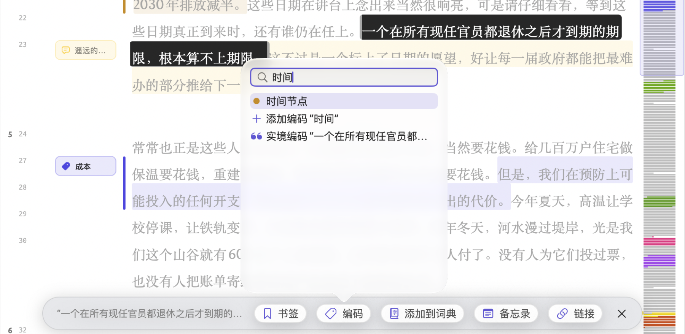
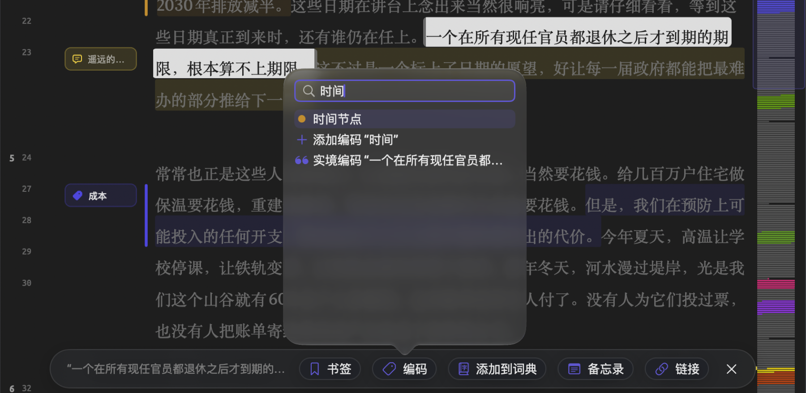


关于何时适合使用编码、备忘录、书签或链接，请参阅第 7 章“编码”。
文档菜单中有执行这些操作的命令，各自的快捷键如下：
| 命令 | 快捷键 |
|---|---|
| 文档 ▸ 编码 | ⇧⌘C |
| 文档 ▸ 实境编码 | ⇧⌘V |
| 文档 ▸ 备忘录 | ⇧⌘M |
| 文档 ▸ 书签（或移除书签） | ⇧⌘B |
| 文档 ▸ 链接（或完成链接） | ⇧⌘L |
| 文档 ▸ 取消链接 | ⌥⇧⌘L |
编辑文档文本
所有文档的文本都可以编辑。LemmaLoom 中的编辑用于修正小错误，例如文章中的打字错误、提取 PDF 文本时产生的错误、转写文本中转写错的词，或者机器翻译中译得不好的措辞。编辑时，LemmaLoom 会让编码实例、备忘录、链接和书签继续附在各自的文字上。存储之后，整个文档会重新建立索引。
编辑器以纯文本显示文档，使用等宽字体。要大段修改文本，请先在别处编辑好，再粘贴回编辑器中；或者导入修改后的文档文件，重新开始编码。粘贴之后，请务必检查各个标注，因为它们现在可能指向错误的文字（见下文标注如何跟随编辑末尾的注释）。
编辑与存储
最常需要编辑的，大概是 LemmaLoom 生成的文本，即转写文本、译文，或者 LemmaLoom 从 PDF 中提取的文本。在“气候辩论”中，它们是“2024 热浪报告”、“电台辩论”的转写文本和“时间不多了 (英语)”。下图是编辑器中一篇持怀疑立场的评论文章“净零代价高昂”，段落之间以空行隔开，标题栏中只有取消和存储两个按钮。
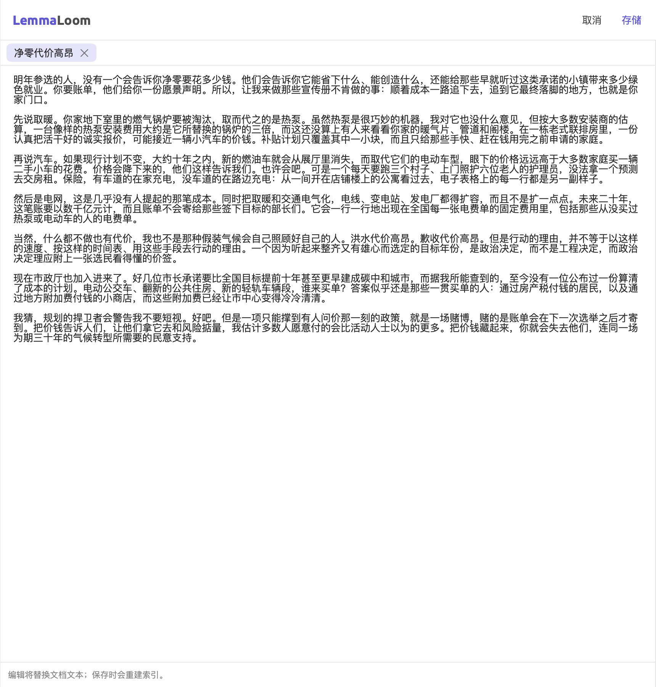
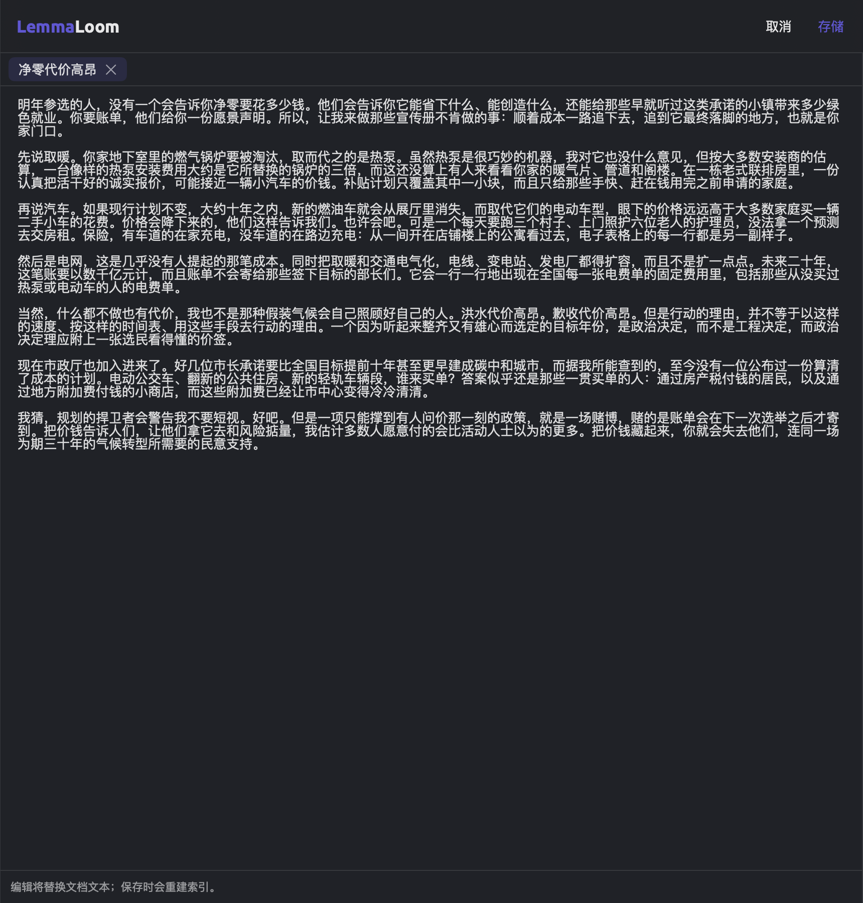
要修改文档的文本：
- 打开文档。
- 点按标题栏右端的编辑，或选取文档 ▸ 编辑（⇧⌘E）。阅读器会变成使用等宽字体的纯文本编辑器。编辑期间，透镜、页边栏、文档概览和状态栏都会隐藏，文本下方会出现一行编辑将替换文档文本；存储时会重建索引。
- 进行修改。输入时，按 ⌘Z 可以撤销你在编辑器中最近的改动。
- 点按标题栏中的存储，或选取文档 ▸ 存储（⌘Return）。
段落之间用空行隔开。没有空行时，文档中每一行算作一个段落。只要加入一个空行，就只有空行才能分隔段落，因此段落数会大幅减少。
点按取消或选取文档 ▸ 取消（⌘.），会离开编辑器并放弃当前的修改；自你点按编辑以来输入的所有内容都会立即消失。
如果阅读器已折叠为只剩被标注的句子，点按编辑会先展开整个文档。
项目中的其他操作（例如为文字编码和撰写备忘录）都会在你执行时自动存储；文本的修改则只有点按存储才会存储。只要编辑器保持打开，切换标签页不会丢失你的修改。但是，如果没有存储就切换到另一个项目或退出 LemmaLoom，修改会永久丢失。
存储做了什么
存储编辑后的文本时，LemmaLoom 会：
- 用你的文本替换文档原来的文本；
- 移动文档中的编码实例、备忘录、书签和链接，让它们跟随各自的文字（见下文的标注如何跟随编辑）；
- 从头重新为文档建立索引。
建立索引期间，阅读器显示修改后的新文本，上方覆盖着正在存储标签。标题栏中原来编辑的位置也显示正在存储。索引建立完成后，透镜、词数和检查器都会根据新的文本更新。如果文档的语言是 LemmaLoom 不做语法分析的语言，阅读器会立即恢复可用。
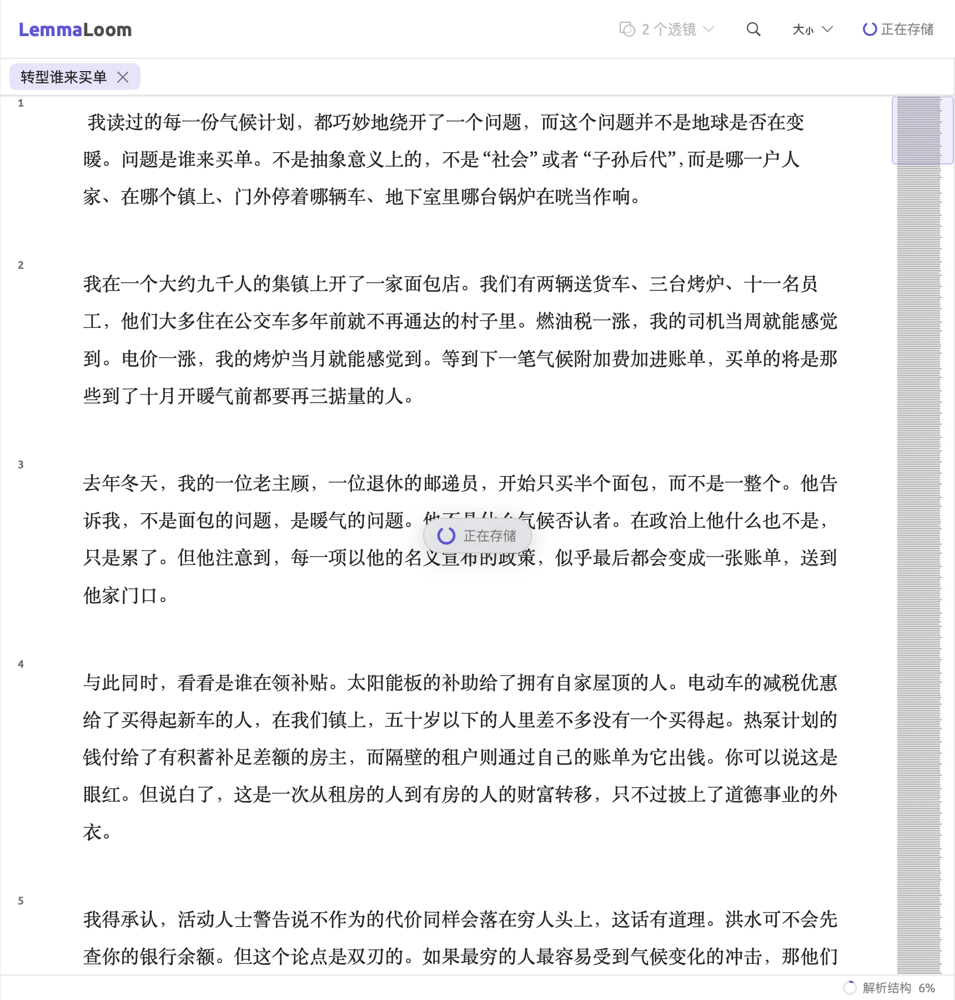
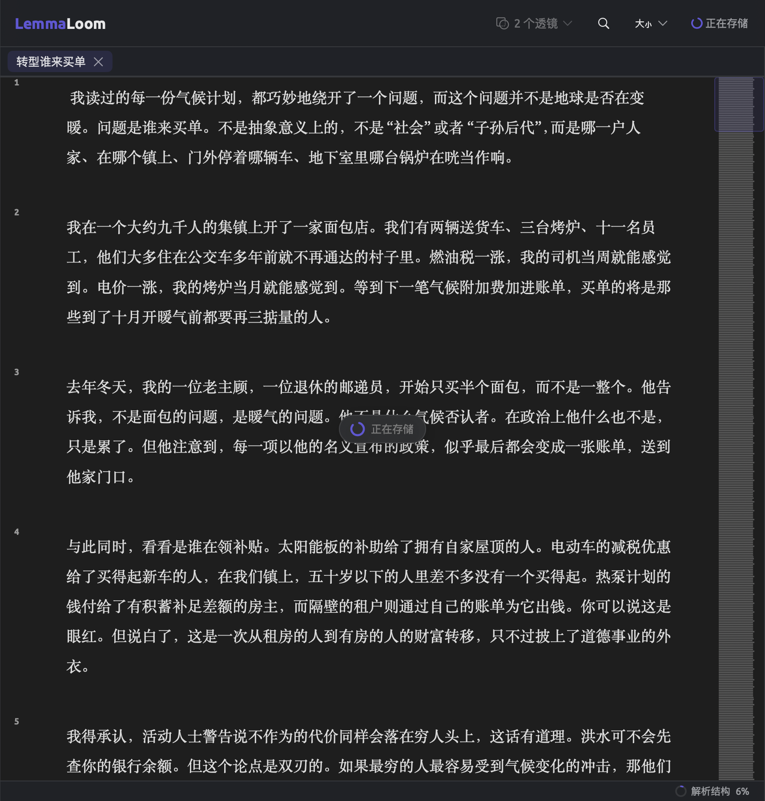
为修改后的文档建立索引，所需时间与最初建立索引时大致相同。你可以在状态栏中查看进度，也可以选取菜单项窗口 ▸ 活动（⌥⌘0）。如果某个文档的索引已关闭，LemmaLoom 要等你点按状态栏中的立即建立索引之后才会重新为它建立索引；在此之前，阅读器会一直显示正在存储。
标注如何跟随编辑
存储对文档的修改时，LemmaLoom 会逐个字符比较修改前后的文本，分析两个版本之间的差异，找出添加和删除了哪些内容。然后，它移动所有相关的内容，使其对应更新后的位置，包括编码实例、附于一段文字的备忘录、书签、链接、转写文本与音频或视频之间的对应关系（见本章后文的校正转写文本），以及原文与译文之间的对齐。同步滚动和标注新副本的放置都依赖这种对齐（见第 9 章“译文与分屏浏览”中的两种语言中的标注）。
编辑只作用于你所编辑的那个语言版本（原文或译文），另一个语言版本中的标注保持不变。如果你事先知道要翻译某个文档，不妨先修正其中的错误，以免把错误带进另一种语言。
在文档中更靠前的位置添加或删除文字，片段会随它的文字一起移动。在片段内部添加的文字会成为片段的一部分。紧接在片段之后添加的文字留在片段之外（除非新文字的最后一个字符与片段的最后一个字符相同，这时它会成为片段的一部分）。在片段内部删除文字，片段会相应变短。紧挨在片段之前添加的文字留在片段之外。替换片段的文字会成为新的片段。删除片段的全部文字后，标注仍然保留，只是片段变为空。
一个示例
演讲“一位市长的承诺”中有这样一段话：
我们将种下一万二千棵树，先从最需要树荫的街区种起。
假设“一万二千棵树”已编码为“希望”。下表列出对原句逐一做出以下各项编辑（每次只做一项）之后，这个编码片段的变化：
| 编辑 | 编辑后的编码片段 |
|---|---|
| “我们将种下”改为“市政府将种下” | “一万二千棵树”，随文字一起移动 |
| “一万二千”改为“12000” | “12000棵树” |
| 在“棵”和“树”之间加上“行道” | “一万二千棵行道树” |
| 在“一万二千”前加上“大约” | “一万二千棵树”；“大约”留在片段之外 |
| 在“树”后加上“，2035年前种完” | “一万二千棵树”；新加的文字留在片段之外 |
| 在“树”后加上“，其中一半是果树” | “一万二千棵树，其中一半是果树” |
| “一万二千棵树”换成“一片城市森林” | “一片城市森林” |
| 删去“一万二千棵树” | 空片段 |
新加的“，2035年前种完”以“完”结尾，而“一万二千棵树”以“树”结尾，所以 LemmaLoom 把新文字放在片段之后。新加的“，其中一半是果树”则和“一万二千棵树”一样以“树”结尾，所以 LemmaLoom 认为它出现在片段内部；这段新文字同样可以看作是在片段最后一个字之前插入的“树，其中一半是果”。
如果像最后一行那样删除了编码实例的文字，这个编码实例就只能在项目视图栏的编码实例视图中找到。你可以在那里右键点按它，然后选取删除编码实例。文字被删除的备忘录和书签也同样会保留下来。为了避免出现空的标注，请先移除标注，再删除它们的文字。
在编码实例附近做了编辑之后，请在阅读器中检查这个编码实例是否仍然覆盖修改后文字中正确的部分。如果需要调整，请从这段文字上移除这个编码实例，然后重新编码（见第 7 章“编码”中的移除一段文字上的编码）。
撤销编辑
每存储一次编辑，撤销历史中就会增加一个条目（见第 23 章“撤销与重做”）。要把编辑过的文本恢复到之前的状态，并让它的所有编码实例、备忘录、书签和链接回到原来的位置，请选取编辑 ▸ 撤销编辑文本（⌘Z）。随后文档会相应地重新建立索引。
音频和视频文档
处理“电台辩论”这样的音频或视频文档时，你使用转写文本的方式与使用任何文本文档完全相同。导入录音后，LemmaLoom 会为你生成转写文本（见第 4 章“导入资料”）。转写文本的每一部分都与录音中它所来自的那一段相关联。每当说话人改变，或者停顿超过大约一秒半，就开始一个新段落。
为录音编码，是通过它的转写文本进行的。如果某些话的含义仅凭转写文本无法确定，例如意思取决于说话人的语调或讽刺口吻，你可以直接收听这些地方的录音。
在 LemmaLoom 中，说话人与文本是分开保存的。录音中有多位说话人时，播放栏会在你收听时显示当前的说话人。由 LemmaLoom 转写的录音，说话人按“说话人 1”“说话人 2”的方式依次命名；在“电台辩论”中，说话人是“主持人”“活动人士”和“怀疑论者”。每位说话人的发言都会自动以“说话人”编码下的一个子编码进行编码。重命名说话人编码之后，播放栏中的名称仍保持原样（见第 4 章“导入资料”中的说话人）。
播放栏
播放栏位于文本上方，其中的内容从左到右依次是：
- 仅视频才有的两个按钮，一个把视频播放器折叠为控制条（折叠为控制条）或重新显示视频（显示视频），另一个把视频移到文本旁边或移回文本上方；
- 播放或暂停按钮；
- 随音频滚动按钮，让阅读器跟随录音；
- 已播放时间、播放滑块和录音总长度；
- 录音中有多位说话人时，当前这段话的说话人，例如“怀疑论者”。
已播放时间和总长度都以分和秒显示，例如 2:14。一小时或更长的录音还会显示小时，例如 3:56:32。
下图是录音“电台辩论”。这段录音将近五分钟，暂停在 1:14，此时正是怀疑论者在发言。由于随音频滚动已打开，当前这段话突出显示，其余文本变灰。说话人编码显示在页边栏中每段发言的旁边。
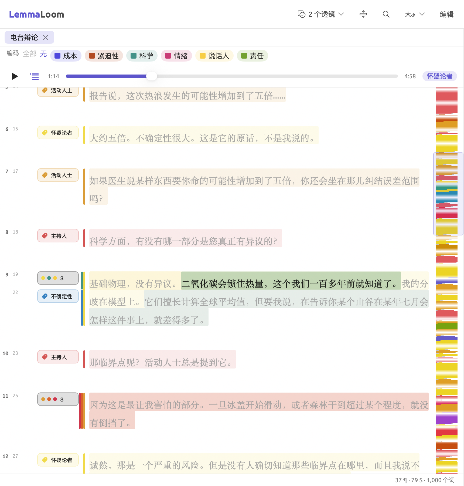
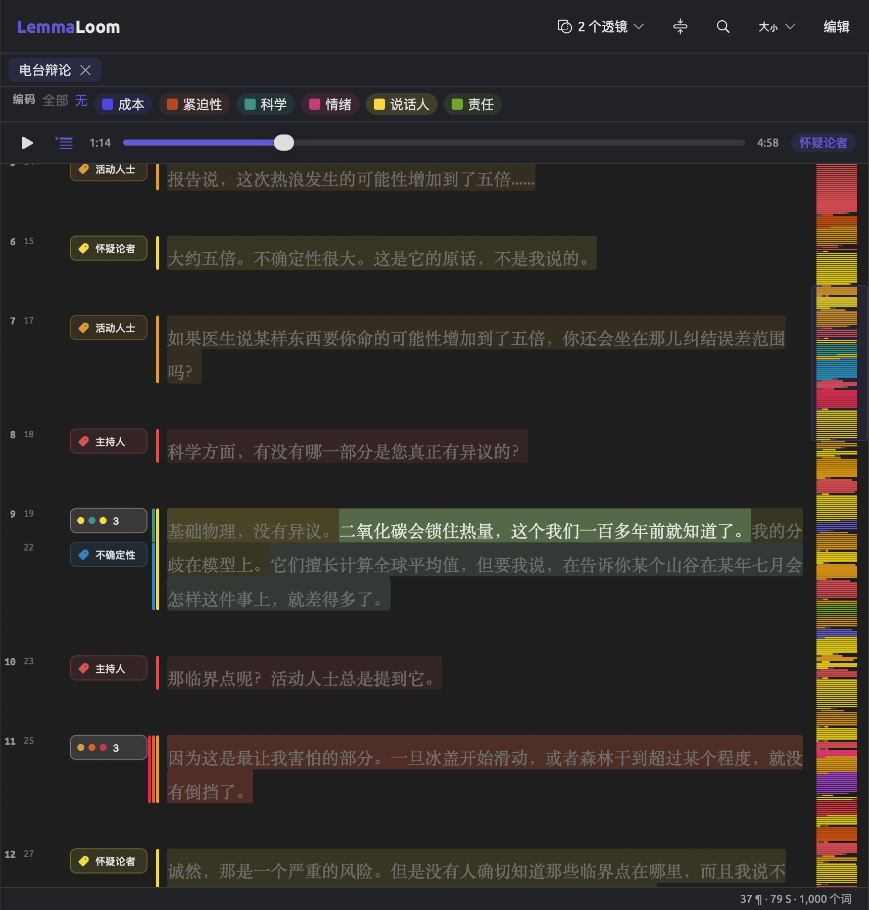
要播放录音：
- 打开文档。
- 点按播放（三角形），或选取文档 ▸ 播放（⇧⌘P）。
- 要停止，请点按暂停或选取文档 ▸ 暂停（⇧⌘P）。
- 要转到另一个位置，请拖动滑块。
在录音末尾点按播放，会从头重新播放。如果在播放时切换标签页或关闭文档，播放会立即暂停。
从转写文本中的某处开始播放
点按转写文本中的一个词，播放器会移到这个词所在那段话的开头。点按只会移动播放头；要从这里开始收听，请点按播放。只有文档建立索引之后，才能通过点按词来移动播放位置（见本章前文的索引建立完成之前）。如果文档的语言没有语法分析，请改用滑块。
要核对一段拿不准的内容，请点按其中的一个词，然后按下 ⇧⌘P 收听，再按一次 ⇧⌘P 即可暂停。
跟随转写文本
随音频滚动打开时（按钮呈高亮状态），阅读器会突出显示正在播放的那段话，并在录音推进时让它保持在窗格中间。拖动滑块时，突出显示的那段话也会随之移动。打开随音频滚动时，阅读器会立即跳到录音当前播放的位置。随音频滚动默认是关闭的；与视频的大小和位置一样，它适用于所有音频和视频文档。
如果在播放时滚动、点按或用键盘移动，阅读器会暂停跟随几秒钟，等录音中的下一段话开始时再滚动回来。选中了文字时，阅读器会停在原处。点按播放，会立即跳回正在播放的那段话。
一边收听一边为录音编码，或者对照录音核对转写文本时，随音频滚动特别有用。遇到值得编码的一段话时，按 ⇧⌘P 暂停播放，阅读器会停在这段话上，让你选中并编码。
设置中阅读器页面的音频播放决定正在播放的那段话如何显示。聚光使正在播放的那段话之外的所有内容变暗。实心块把正在播放的那段话放在一块色块上。高亮则给正在播放的那段话加上一层浅浅的高亮。
视频在文本上方或旁边
视频在文本区域上方的画框中播放。你可以向上拖动视频画框下方的分隔条，给文本区域留出更多空间；也可以点按折叠为控制条，把视频折叠起来，只保留播放栏。
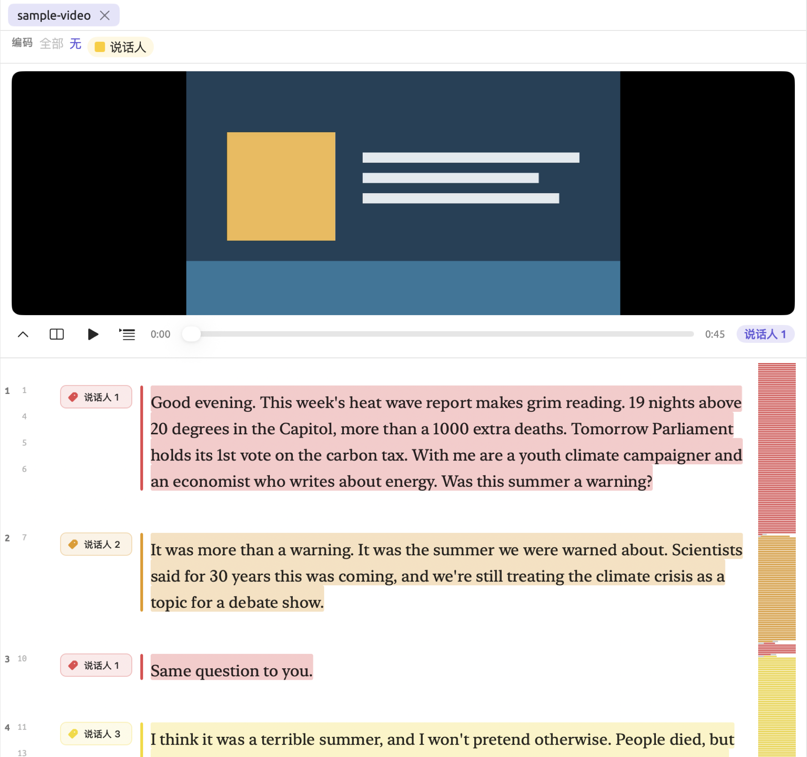
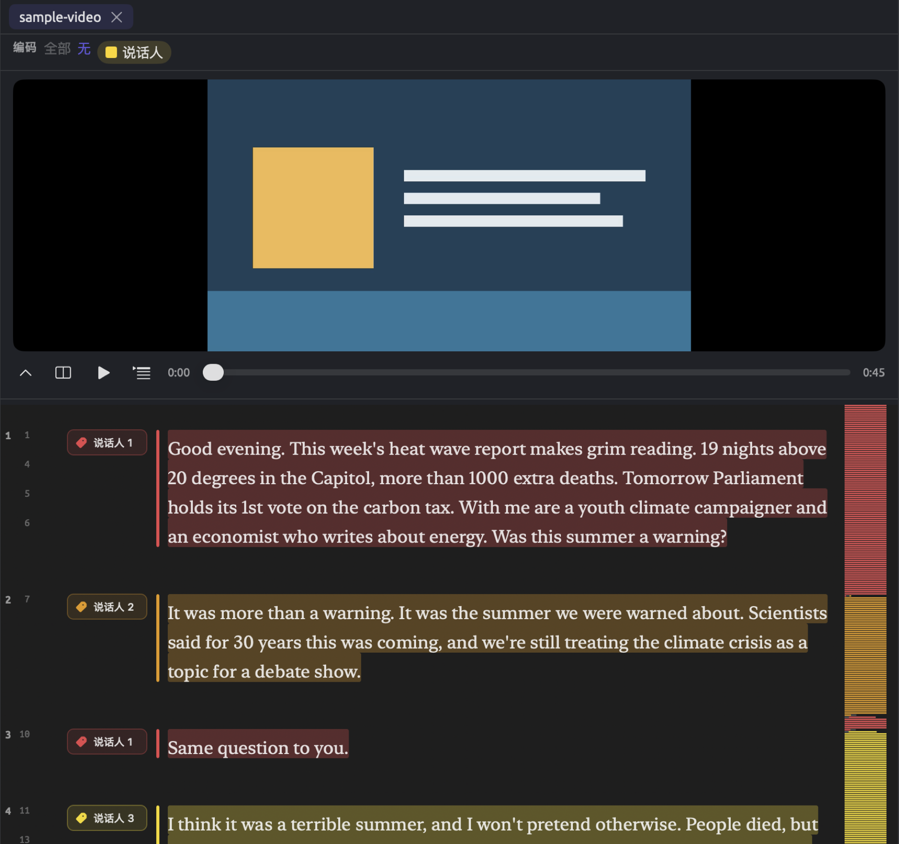
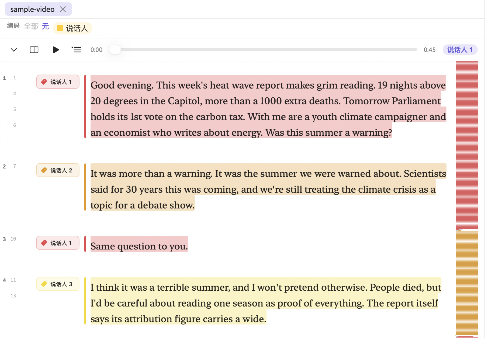
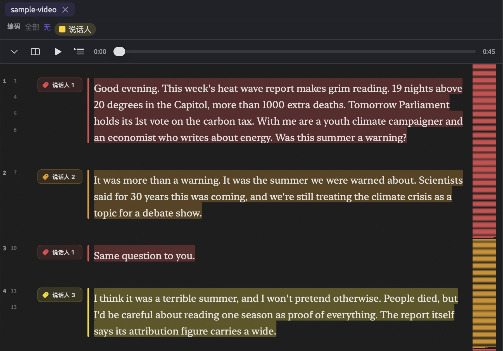
点按在文本旁边显示视频按钮，视频会移到文本区域左侧，播放栏位于视频下方。拖动两者之间的分隔条，可以相应地调整两个区域的大小，文本始终保持适合阅读的宽度。点按在文本上方显示视频按钮，即可恢复原来的布局。在较宽的屏幕上，把视频放在文本旁边能显示更多行转写文本。
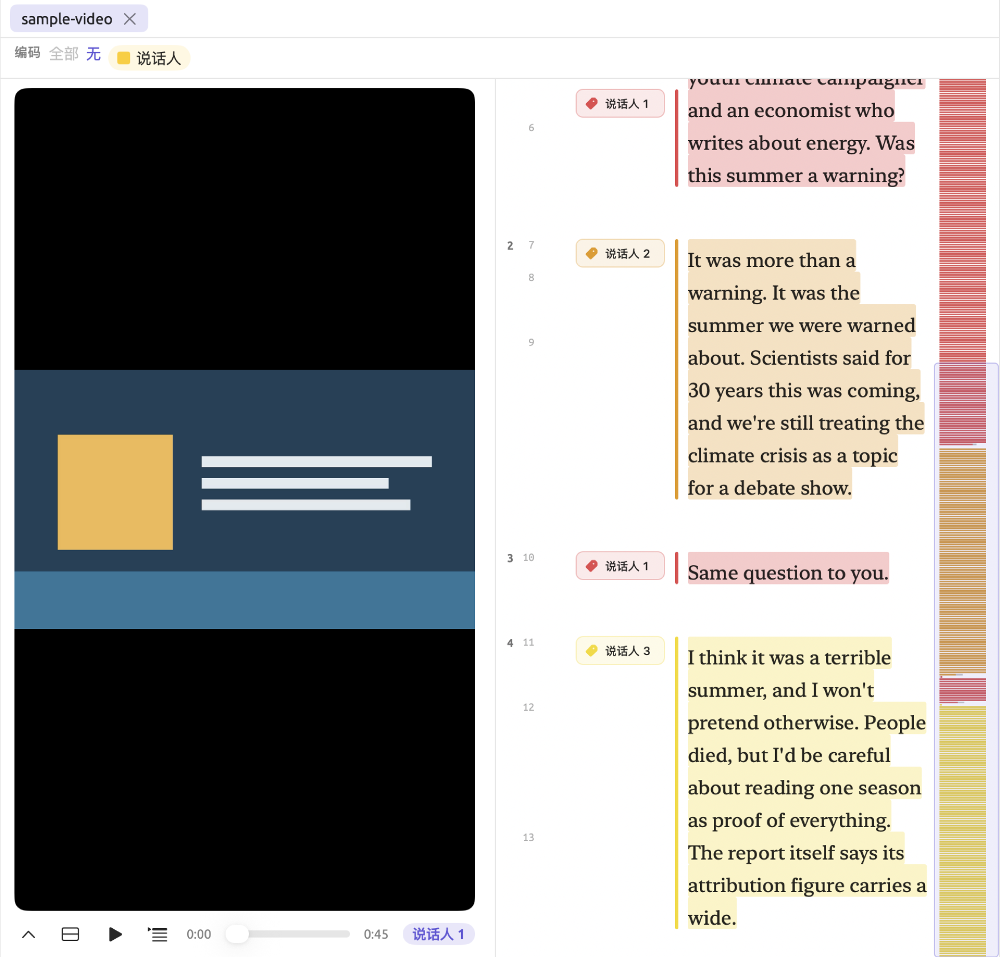
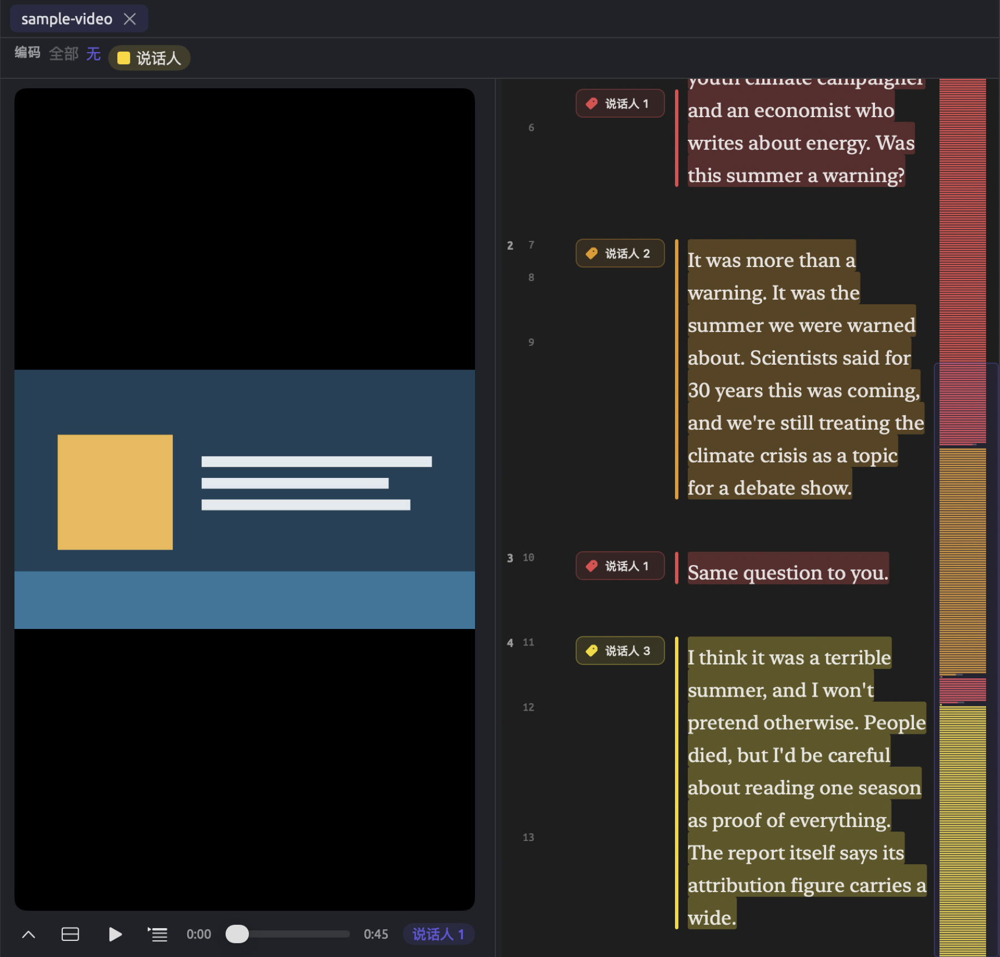
校正转写文本
转写文本难免有错误，人名和专业术语尤其如此。校正转写文本与编辑其他文本的方法相同（见本章前文的编辑与存储）。编辑期间播放栏保持不动，你仍然可以用 ⇧⌘P 开始或暂停播放。
最合理的做法是先找出转写文本中的错误，再逐一修正。在阅读器中打开随音频滚动并播放录音，找出需要修正的地方（可以为它们加上书签）。然后进入编辑器，修正这些错误。最好在编码之前校正转写文本。
转写文本与录音之间的对应关系会像编码实例一样跟随你的编辑（见本章前文的标注如何跟随编辑）。因此，一段话中改正过的词仍然作为这段话的一部分播放，点按它也会跳到录音中与修改前相同的位置。
全屏幕阅读器
LemmaLoom 以全屏幕模式运行时，整个窗口占满屏幕。标题栏会隐藏，它的工具移到屏幕最上方的工具栏中。全屏幕模式特别适合初读较长的文档。为文档编码时，你可以让检查器保持打开，例如在它的编码标签页中随时看到文档的编码。
下图是“时间不多了”以全屏幕显示时的样子，导航栏和检查器都保持打开，工具栏中的阅读器设置菜单已打开。
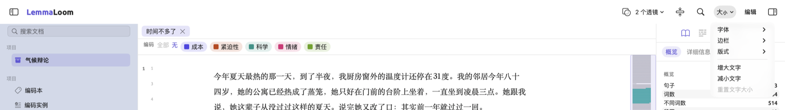
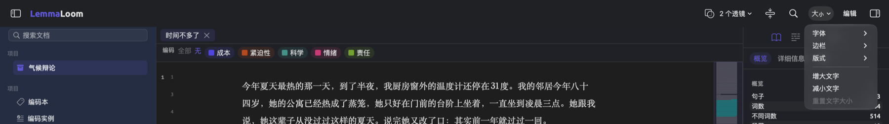
要以全屏幕模式阅读：
- 打开文档。
- 选取显示 ▸ 进入全屏幕（⌃⌘F），或点按窗口左上角的绿色按钮。
- 要让文本占据整个屏幕的宽度，请用显示 ▸ 显示/隐藏导航栏（⌃⌘S）隐藏导航栏，用显示 ▸ 显示/隐藏检查器（⌃⌘I）隐藏检查器。
- 要退出全屏幕，请选取显示 ▸ 退出全屏幕（⌃⌘F）。
本章介绍的所有菜单命令和快捷键在全屏幕模式下同样适用。
并排阅读两个文档
分屏浏览把阅读器分成两个窗格，各显示一个文档。你可以用它把两个文档放在一起对照，例如行动派就某个话题写的一篇评论文章和怀疑派就同一问题写的另一篇，或者一篇文章和它的译文。编码进行到一半时，分屏浏览也很有帮助。在一个窗格中打开已经编码过的文档，你可以确切地看到自己是如何为某处内容编码的，从而在为当前文档编码时一致地使用这个编码。关于如何结合分屏浏览使用译文，请参阅第 9 章“译文与分屏浏览”。
图中左侧是评论文章“时间不多了”，右侧是它的英文译本“时间不多了 (英语)”。译文中有原文编码实例的副本，同步滚动让两者在滚动时保持对齐。
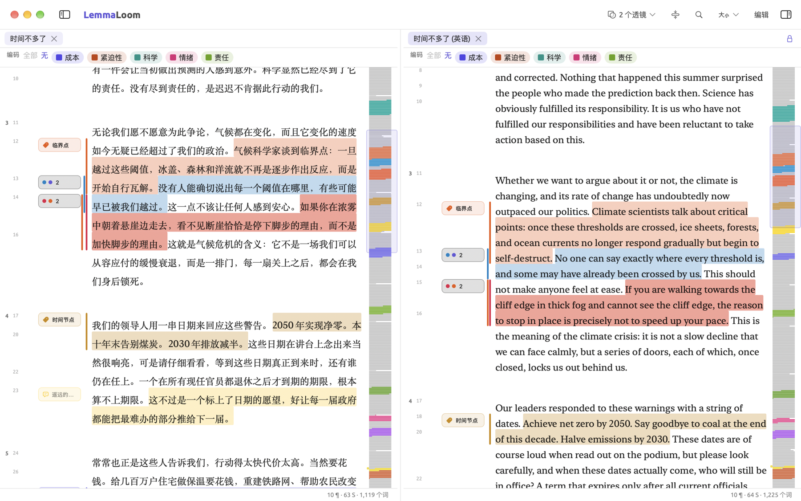
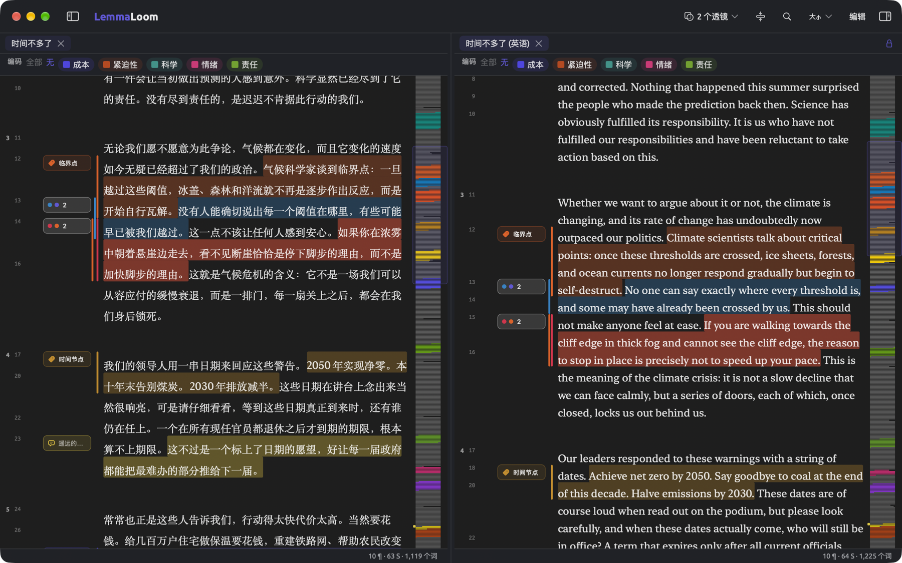
在当前文档旁边打开第二个文档有几种方法。
- 在导航栏中右键点按该文档，然后从快捷菜单中选取在分屏浏览中打开。
- 也可以右键点按另一个已打开文档的标签页，然后从菜单中选取在分屏浏览中打开。
- 要同时并排打开两个文档，请在导航栏中按住 ⌘ 键点按第二个文档，然后右键点按其中一个，从快捷菜单中选取并排打开。在导航栏中位置较高的那个文档在左侧打开。
- 对于译文，请在导航栏中右键点按它，然后选取在原文旁边打开。原文在左侧打开，译文在右侧打开。
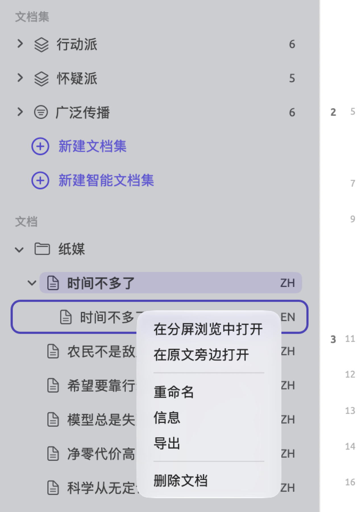
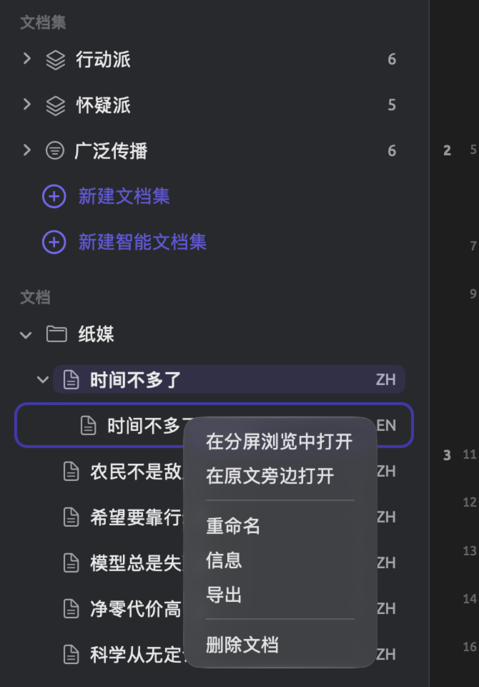
以上所有选项也都位于主菜单的窗口下。在那里，在分屏浏览中打开会列出可以放在当前文档旁边的已打开文档。
新打开的文档显示在右侧窗格中。它的标签页会从标签页栏中移到右侧窗格的标题条上。
分屏浏览的工作方式如下。
- 点按任一窗格即可激活它，它的标签页会高亮显示。此后工具、菜单和检查器都只作用于当前窗格，所以 ⌘F 只会搜索这个窗格中的文档。
- 拖动两个窗格之间的分隔条，可以调整它们各自的大小。窗格有最小尺寸限制。LemmaLoom 会记住分隔的位置，再次打开分屏浏览时恢复。
- 每个窗格都有自己的透镜和搜索栏，选区和滚动位置也各自独立。例如，你可以在一个窗格中启用某个语法透镜，在另一个窗格中只显示你的编码。字体、文字大小、页边栏和版式在两个窗格之间保持同步。
- 如果两个文档是原文和译文，或者是同一原文的两份译文，右侧窗格标题条的最右端会出现一个锁形按钮同步滚动。点按它，或者选取显示 ▸ 同步滚动（⌥⌘L），即可同步滚动。
要关闭分屏浏览，请点按右侧窗格标题条上的 ×，从这个标题条的快捷菜单中选取关闭分屏浏览，或者从主菜单中选取窗口 ▸ 关闭分屏浏览。右侧窗格中的文档会随之关闭。
在单独的窗口中打开文档
你也可以在单独的窗口中阅读文档。如果你有另一台显示器，或者希望在主窗口显示其他内容（例如编码本或查询）时让一篇文本保持可见，这会很有用。要在单独的窗口中打开文档，请右键点按该文档的标签页，然后选取在新窗口中打开。对于当前文档，也可以选取窗口 ▸ 在新窗口中打开。文档窗口显示阅读器和它自己的检查器。LemmaLoom 只有一个这样的窗口，所以在新窗口中打开另一个文档时，会替换窗口中原来显示的文档。
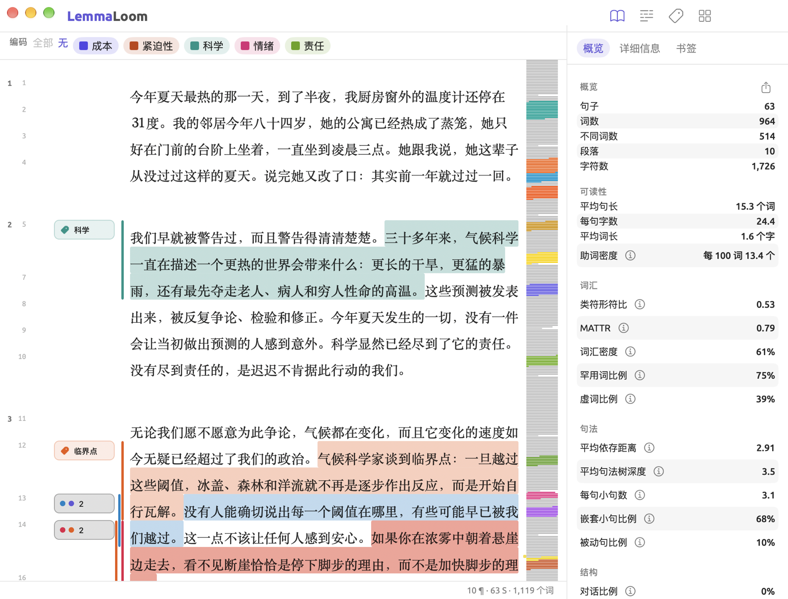
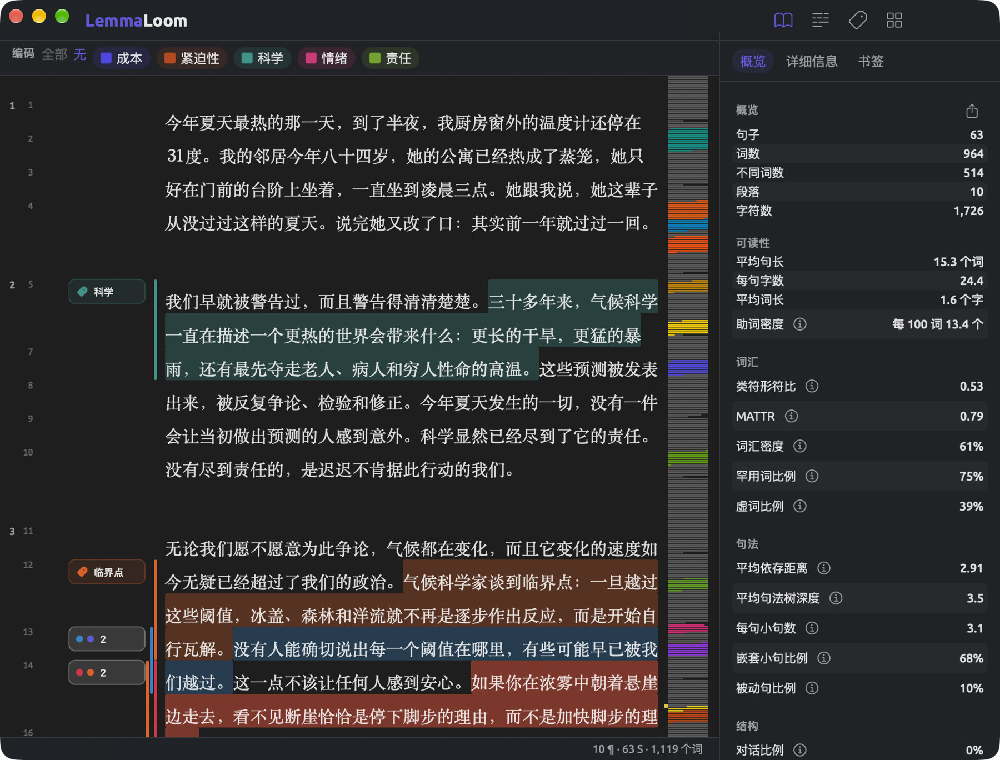
在这个窗口中，你可以使用相应的菜单命令及其快捷键，例如用 ⌘F 查找文本，用 ⌘+ 和 ⌘- 调整文字大小，用 ⇧⌘E 编辑文档，用 ⌃⌘I 显示或隐藏检查器，用 ⌘Return 完成编辑，或者用 ⌘. 取消编辑。
阅读与编辑命令
| 命令 | 快捷键 | 说明 |
|---|---|---|
| 编辑 ▸ 查找 | ⌘F | 打开或关闭搜索栏。编辑时不可用。 |
| 编辑 ▸ 查找下一个 | ⌘G | 搜索栏有匹配项时可用。 |
| 编辑 ▸ 查找上一个 | ⇧⌘G | 搜索栏有匹配项时可用。 |
| 显示 ▸ 增大文字 | ⌘+ | 打开了文档时可用，最大 200%。 |
| 显示 ▸ 减小文字 | ⌘- | 打开了文档时可用，最小 70%。 |
| 显示 ▸ 重置文字大小 | ⌘0 | 打开了文档且文字大小不是 100% 时可用。 |
| 显示 ▸ 同步滚动 | ⌥⌘L | 在分屏浏览中显示同一文档的两种语言版本时可用。 |
| 显示 ▸ 显示/隐藏导航栏 | ⌃⌘S | 显示或隐藏导航栏。 |
| 显示 ▸ 显示/隐藏检查器 | ⌃⌘I | 显示或隐藏检查器。 |
| 显示 ▸ 进入全屏幕 | ⌃⌘F | 在全屏幕模式下显示为退出全屏幕。 |
| 文档 ▸ 编辑 | ⇧⌘E | 文档的文本载入后可用。 |
| 文档 ▸ 存储 | ⌘Return | 编辑时可用。 |
| 文档 ▸ 取消 | ⌘. | 编辑时可用。 |
| 文档 ▸ 播放或暂停 | ⇧⌘P | 用于音频和视频文档。 |
| 编辑 ▸ 撤销编辑文本 | ⌘Z | 存储编辑之后可用。 |
LemmaLoom 中所有快捷键的列表，请参阅第 25 章“键盘快捷键”。